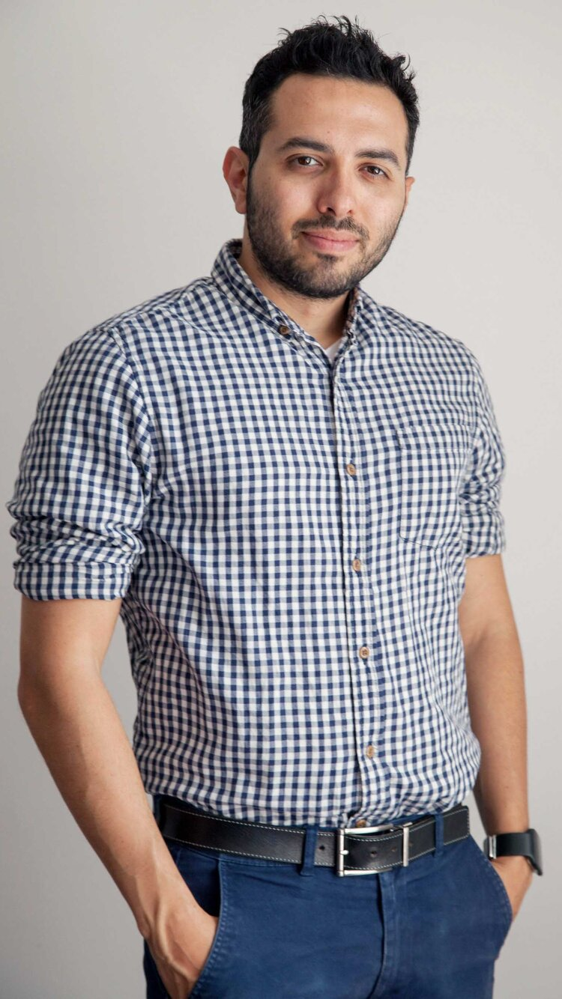
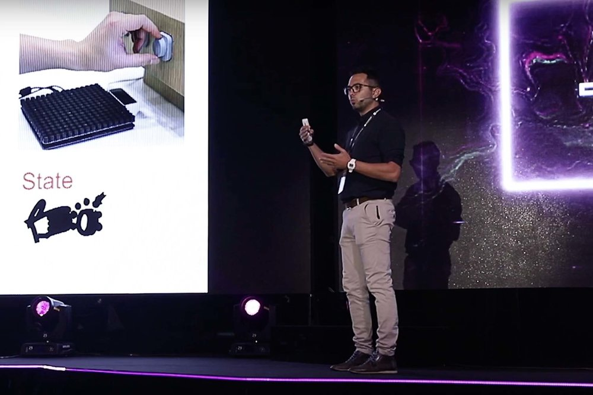
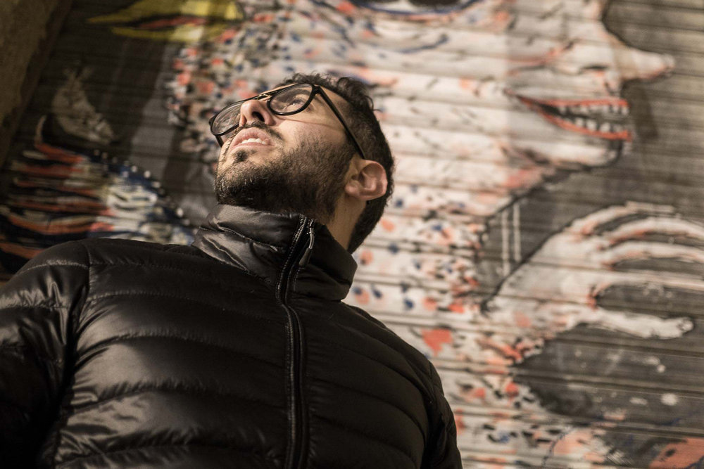

An experienced researcher, inventor, and author, with a track record at leading R&D teams, writing winning grant proposals, whilst being passionate about deep-tech innovation that leads to impact.

RESEARCHER. INVENTOR. AUTHOR.
Dr Orestis Georgiou is an author of 5 patents and 80 academic papers published in leading journals and conferences of Mathematics, Physics, Computer Science, Engineering and Medicine. As a Director of Research at Ultraleap he oversees all internal and external R&D activities and aligns them to the business needs and roadmaps. Through this role, Orestis has secured R&D grant funding in excess of €6 million including the two FET Open projects Levitate and H-Reality which he currently manages and contributes to. An avid networker, Orestis has built 80+ partnerships with leading academic and industrial research labs all around the world.
Orestis holds a Marie Curie Fellowship at the University of Cyprus (UCY). Through this role, he secured R&D grant funding worth €150 thousand on topics related to 5G and 6G wireless communications and energy neutral sensor networks under the project called NEWSENs. Following from his research contributions in wireless communications, Orestis was the recipient of the prestigious IEEE Heinrich Hertz Award in 2019.
In his earlier career, Orestis worked as a Senior Researcher at Toshiba TRL, held a Postdoc position at the Max Planck Institute PKS in Dresden, and completed a PhD in Applied Mathematics at the University of Bristol. He currently holds visiting positions at the School of Mathematics of the University of Bristol and at the Department of Informatics at the University of Sussex.
PUBLICATIONS.
Publishing has allowed me to network with other scholars and to further refine my own ideas and research. It’s something I enjoy immensely and hope that these papers will help others further their science and welcome any opportunities to collaborate.

SPEAKING.
I’ve communicated my science to over 40 academic conferences, organised several international workshops, delivered multiple invited tutorial presentations including a keynote to 500 engineering students.

ROLES.
My exposure to both academic and industrial settings (large and small) over the past 10 years has taught me to think strategically, pragmatically, and scientifically, positioning me as someone able to imagine, connect and direct research efforts towards tangible objectives and strategic targets.